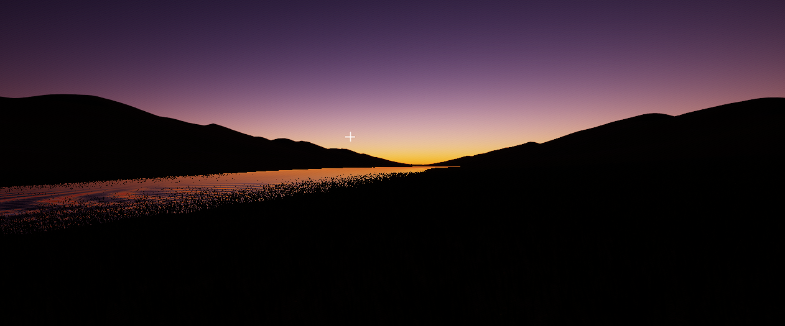
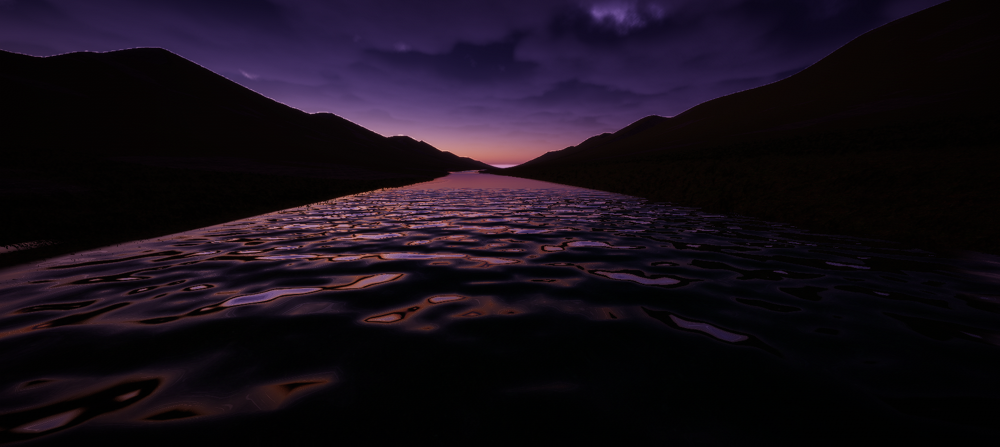
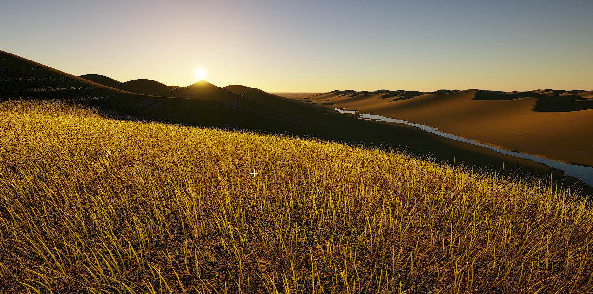

This site uses GoatCounter for visitor statistics. Privacy settings
Game Engine
An experimental game engine focused on large-scale landscapes, atmosphere and long-distance exploration.
GitHub Repository


This website uses GoatCounter for visitor statistics. The following analytics data is collected:
GoatCounter is designed to provide privacy-friendly, cookie-free website analytics. You can opt out of analytics for this browser below. Your choice is saved in this browser.
For more information, see GoatCounter’s privacy information .
For inquiries, contact KroxenStudios@proton.me.